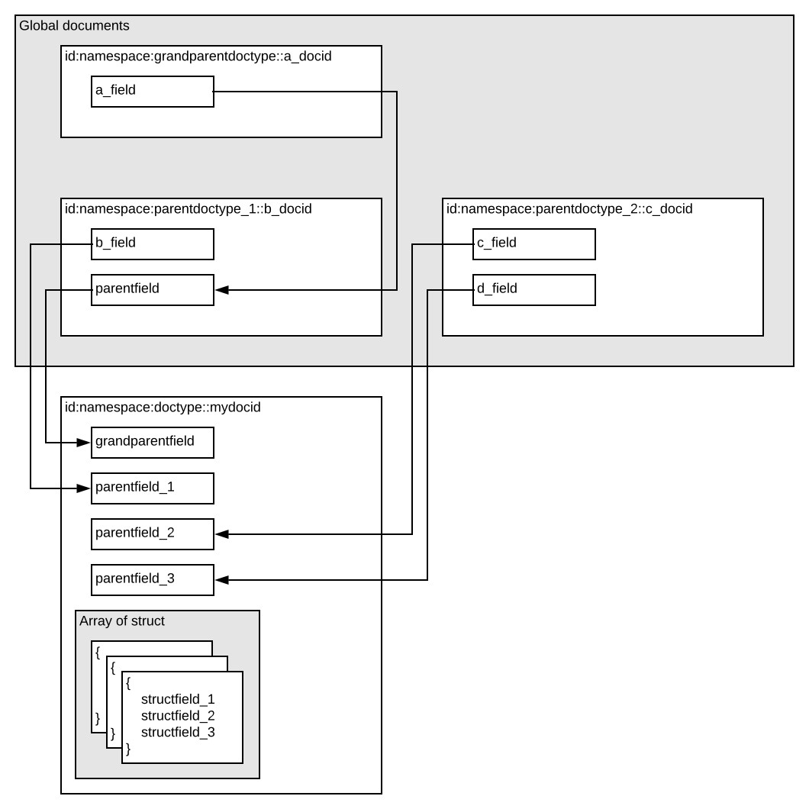

Using document references, documents can have parent/child relationships. Use this to join data - features
Common use cases are applications with structured data like commerce (e.g. products with multiple sellers), advertising (advertisers with campaigns with ads, that have budgets that need realtime updates).
High-level overview of documents, imported fields and array fields:

Model parent-child relationships by using references to global documents. Using a reference, fields can be imported from parent types into the child's search definition and used for matching, ranking, grouping and sorting.
When using parent-child relationships, data does not have to be denormalized as fields from parents are imported into children. Use this to update parent fields to limit number of updates if a field's value is shared beween many documents. This also limits the resources (memory / disk) required to store and handle documents on content nodes.
Documents can have references to parent documents (like foreign keys in a relational database), in multiple levels - parents can have parents (grandparents). Parent documents must be global documents. A reference is a string attribute with the parent's document ID as value. References are hence weak:
Documents can import field values into own fields from parent documents. Some restrictions on grandparent fields and complex types, ref #7930
At cluster changes, global documents are merged to new nodes before regular documents. A content node is not serving queries before all global documents are synchronized - refer to elastic Vespa for details.
As parent documents are global, a PUT or UPDATE will execute on all content nodes. Node capacity will limit the number of such documents - there should normally be an order of magnitude fewer parent documents than child documents.
Memory usage grows accordingly. A global document is otherwise equal to a regular document, but each content node must be sized to hold all global documents plus its share of regular documents.
NOTE: Reference and imported fields are not supported in streaming mode.
size of a reference
A document can have references to multiple parents - the parents can be of same or different types.
query performance - references fields add an indirection
A document can have fields that are arrays of structs. Structs and documents are similar - a set of field name/value pairs. One-to-many mappings can hence be implemented this way, as an alternative to using parent/child.
sameElement() is a useful query operator to restrict matches to same struct element.
fieldpath to update?
search advertiser {
document advertiser {
field name type string {
indexing : attribute
}
}
}
[
{ "put": "id:test:advertiser::cool", "fields": { "name": "cool" } }
]
search campaign {
document campaign {
field advertiser_ref type reference<advertiser> {
indexing: attribute
}
field budget type int {
indexing : attribute
}
}
import field advertiser_ref.name as advertiser_name {}
}
[
{ "put": "id:test:campaign::thebest", "fields": {
"advertiser_ref": "id:test:advertiser::cool",
"budget": 20 }
},
{ "put": "id:test:campaign::nextbest", "fields": {
"advertiser_ref": "id:test:advertiser::cool",
"budget": 10 }
}
]
search salesperson {
document salesperson {
field name type string {
indexing: attribute
}
}
}
[
{ "put": "id:test:salesperson::johndoe", "fields": { "name": "John Doe" } }
]
search ad {
document ad {
field campaign_ref type reference<campaign> {
indexing: attribute
}
field other_campaign_ref type reference<campaign> {
indexing: attribute
}
field salesperson_ref type reference<salesperson> {
indexing: attribute
}
}
import field campaign_ref.budget as budget {}
import field salesperson_ref.name as salesperson_name {}
import field campaign_ref.advertiser_name as advertiser_name {}
document-summary my_summary {
summary budget type int {}
summary salesperson_name type string {}
summary advertiser_name type string {}
}
}
[
{ "put": "id:test:ad::1", "fields": {
"campaign_ref": "id:test:campaign::thebest",
"other_campaign_ref": "id:test:campaign::nextbest",
"salesperson_ref": "id:test:salesperson::johndoe" }
}
]
Document type ad has two references to campaign (via campaign_ref and other_campaign_ref) and one reference to salesperson (via salesperson_ref). The budget field from campaign is imported into the ad search definition (via campaign_ref) and given the name budget. Similarly, the name of salesperson is imported as salesperson_name. Document type campaign has a reference to advertiser and imports the field name as advertiser_name. This is also imported into ad via campaign_ref from its grandparent advertiser. To use the imported fields in summary, define a document summary my_summary containing these fields.